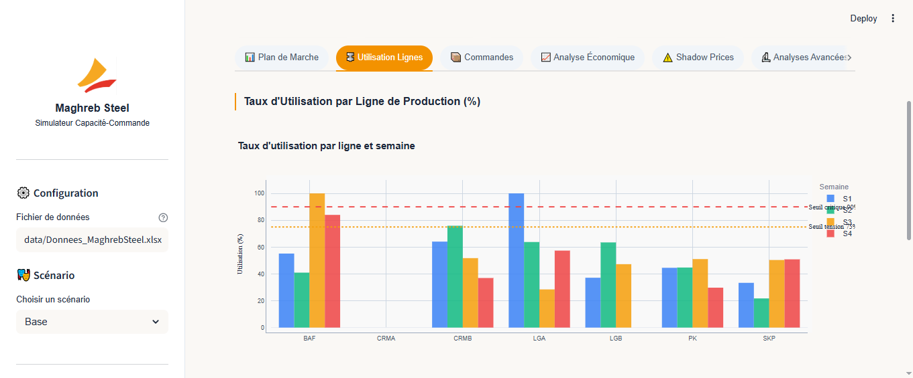
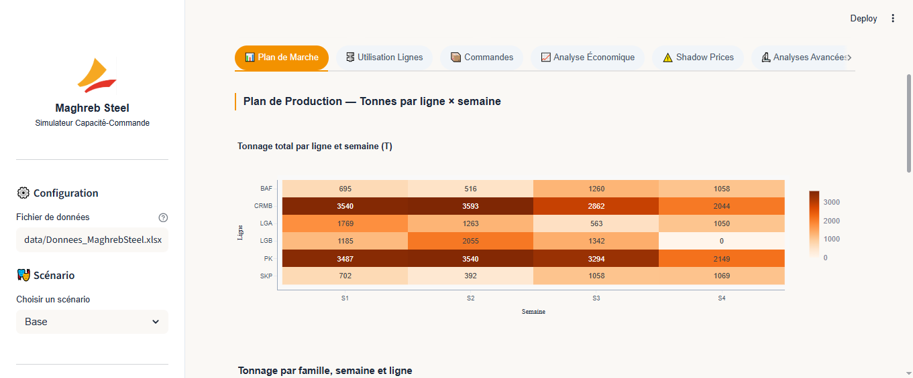
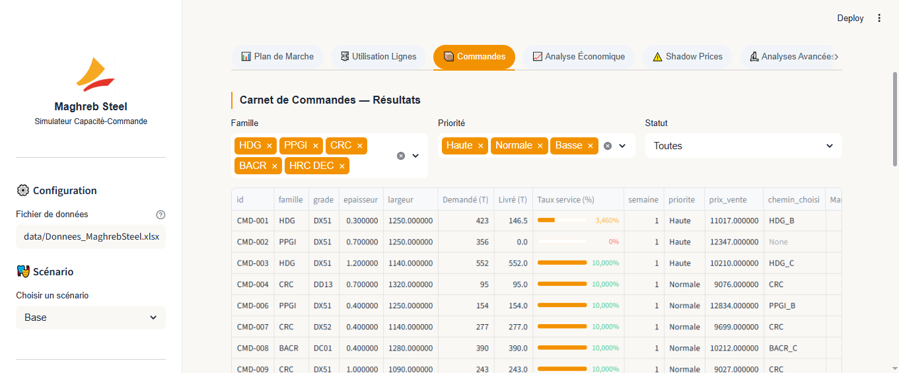
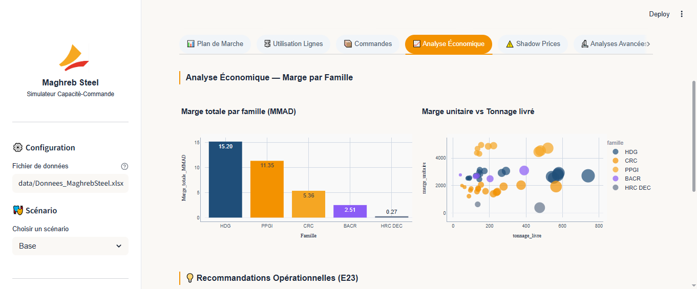
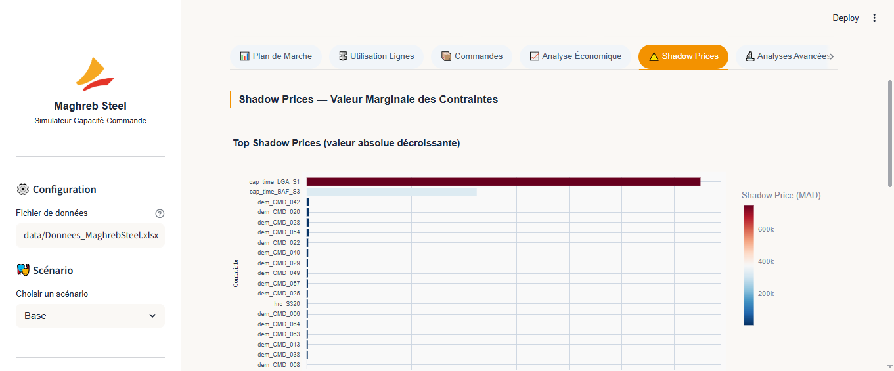

Aperçu du Projet
Contexte industriel et objectifs du simulateur
🏭 Contexte industriel
L'usine de Tit Mellil reçoit en continu des consultations commerciales : un client demande un tonnage précis d'un produit (famille, grade, épaisseur, largeur) à livrer avant une date donnée, à un prix négocié.
Aujourd'hui, cette décision est prise au cas par cas avec un fichier Excel manuel. Le simulateur automatise et optimise ce processus sur un horizon de 4 semaines.
🎯 4 Objectifs métier
📦 Familles de produits traitées
📁 Structure du projet
L'Application Web
Guide d'utilisation complet de l'interface Streamlit
python -m streamlit run app.py
→ puis ouvrir http://localhost:8501

Ce qu'elle contient :
- Fichier de données — chemin vers le fichier Excel source. Par défaut :
data/Donnees_MaghrebSteel.xlsx - Scénario — sélectionner un des 4 scénarios (Base, HRC +10%, Panne LGB, Commande urgente)
- Bouton "Lancer l'optimisation" — déclenche la résolution du modèle LP (environ 5-10 secondes)
| KPI | Définition | Couleur |
|---|---|---|
| Marge totale | Σ (Prix_vente − Coûts) × Tonnage livré | Bleu/vert gradient |
| Taux de service | Tonnage_livré / Tonnage_demandé × 100% | 🟢 ≥85% · 🟡 ≥70% · 🔴 <70% |
| Tonnage livré | Total des tonnes effectivement produites | Bleu |
| Cdes refusées | Commandes avec taux service < 5% | 🔴 >10 · 🟡 >5 · 🟢 ≤5 |
| Marge/Tonne | Marge totale / Tonnage livré | Gradient |
Onglet 1 — Plan de Marche
Le livrable principal pour le département Planification

🔥 Heatmap — Tonnage par ligne × semaine
Comment lire : Chaque cellule indique le tonnage total (en T) transitant par une ligne à une semaine donnée. Plus la cellule est colorée/foncée, plus la ligne est chargée. Les zones de forte intensité mettent en évidence les goulots d'étranglement de production.
📊 Barres empilées — Tonnage par famille
Comment lire : Chaque barre représente la production totale d'une semaine, décomposée par famille de produits (CRC, HDG, PPGI, BACR). Cela permet de suivre l'évolution hebdomadaire du mix produit planifié.
Onglet 2 — Utilisation des Lignes
Identifier les goulots d'étranglement (question E16)

- CRMB — 99.6% en Semaine 1
- LGA — 100% en Semaine 1
- BAF — 100% en Semaine 3
→ Ces lignes bloquent des commandes. Investissement prioritaire.
- CRMB — 82.9% en Semaine 2
- LGB — 77.4% en Semaine 1
- BAF — 84% en Semaine 4
→ Surveiller. Risque si nouvelles commandes.
- CRMA — 0% toutes semaines
- SKP — max 60%
- PK — max 55%
→ Capacité disponible. Peut absorber plus.
Onglet 3 — Commandes
Carnet de commandes avec taux de service (questions E13, E17)

Filtres interactifs
Filtrer par famille (CRC, HDG, PPGI, BACR), par priorité (Haute, Normale, Basse) et par statut (honorées, partielles, refusées).
Tableau avec barre de progression
La colonne Taux service s'affiche en barre de progression colorée : vert (≥95%), orange (5–95%), rouge (<5%).
Camembert — Tonnage livré par famille
Vue rapide du mix de production : quelle famille représente le plus de tonnage livré.
Barres empilées — Tonnage par priorité
Visualise si le modèle respecte bien la priorisation des commandes Haute > Normale > Basse.
Colonnes du tableau expliquées
| Colonne | Description | Type |
|---|---|---|
id | Identifiant commande (CMD-001 à CMD-066) | Texte |
famille | Famille de produit (CRC, HDG, PPGI, BACR) | Catégorie |
grade | Grade d'acier (DC01, DD13, DX51, DX52, S320) | Catégorie |
epaisseur | Épaisseur en mm — détermine le coût de transformation | Float |
tonnage_demande | Tonnage demandé par le client | Float (T) |
tonnage_livre | Tonnage que le modèle décide de produire | Float (T) |
taux_service | tonnage_livre / tonnage_demande × 100% | % (0–100) |
chemin_choisi | Chemin de production optimal sélectionné par le solveur | Texte |
marge_unitaire | Marge nette par tonne livrée (MAD/T) | Float |
marge_totale_cmd | Marge totale générée par cette commande | Float (MAD) |
Onglet 4 — Analyse Économique
Marge par famille et recommandations (questions E19, E23)

💰 Contribution à la Marge par Famille
Compare la contribution financière globale de chaque famille de produits (CRC, HDG, PPGI, BACR) en millions de MAD (MMAD). Permet d'identifier instantanément le principal moteur de rentabilité de l'usine.
🔵 Analyse Volume vs Rentabilité (Scatter)
Chaque point représente une commande honorée. L'axe X correspond au tonnage livré, et l'axe Y à la marge par tonne (MAD/T). Les commandes situées en haut à droite sont les plus stratégiques (fort volume et forte marge unitaire).
Investir dans la ligne CRMB/LGA
Goulots à >99%. Chaque tonne de capacité supplémentaire génère de la marge additionnelle identifiable via le shadow price.
Prioriser PPGI/HDG (marge/T élevée)
Ces familles génèrent les meilleures marges unitaires. Le commercial devrait orienter les clients vers ces produits.
Négocier le prix HRC DC01
Grade le plus consommé. Un gain de 5% sur son prix améliore la marge globale de ~150–200 MAD/T livré.
Onglet 5 — Shadow Prices
Valeur marginale des contraintes (questions E17, E18)

Interprétation des 3 principaux shadow prices
| Contrainte | Valeur (MAD) | Interprétation business |
|---|---|---|
dem_CMD_042 |
+4 740 | Si on permet de livrer 1 tonne de plus de CMD-042, la marge augmente de 4 740 MAD. Cette commande est très rentable et bloquée par capacité. |
dem_CMD_028 |
+4 520 | Même logique. Commande bloquée par saturation CRMB en S1. |
cap_CRMB_S1 |
+3 200 | 1 tonne de capacité supplémentaire sur CRMB en semaine 1 rapporte 3 200 MAD. Investissement justifié si coût < 3 200 MAD/T/semaine. |
Modèle Mathématique
Formulation complète du programme linéaire (questions E5–E10)
E5 — Variables de décision
Tonnage de la commande i produit via le chemin de production k, en tonnes.
- i ∈ {CMD-001, …, CMD-066} — index des commandes
- k ∈ {CRC, HDG_A, HDG_B, HDG_C, PPGI_A, PPGI_B, BACR_A, BACR_B, BACR_C, HRC_DEC} — chemin
- Domaine : 0 ≤ xi,k ≤ Tonnage_demandéi
E6 — Fonction objectif
| Terme | Description | Valeur type |
|---|---|---|
| Prix_ventei | Prix de vente negocié avec le client (MAD/T) | 8 000 – 13 000 MAD/T |
| Prix_HRC × (1/ρk) | Coût matière première HRC ramené à la tonne de produit fini. 1/ρk = tonnage HRC entrant nécessaire par tonne finie. | 5 800 – 7 000 MAD/T |
| Coût_transfoi,k | Somme des coûts de transformation de chaque process sur le chemin, ramenés à la tonne finie. | 800 – 2 500 MAD/T |
| Val_chutes | Valorisation ferraille : (1/ρ − 1) × tonnage × 1 800 MAD/T × 50% | 50 – 200 MAD/T |
| Extras | Zinc : 18 000 × 0.025 = 450 MAD/T (HDG/PPGI). Peinture : 12 000 × 0.01 = 120 MAD/T (PPGI). | 0 – 570 MAD/T |
E7–E9 — Contraintes
On ne peut pas livrer plus que ce que le client a commandé. Cette contrainte active → taux de service = 100% pour cette commande.
Le tonnage traversant chaque ligne ne dépasse pas sa capacité nette hebdomadaire. Les arrêts planifiés réduisent le nombre de jours disponibles. Les rendements augmentent le tonnage amont nécessaire.
La consommation totale de HRC d'un grade (sur tout l'horizon) ne dépasse pas le stock disponible. Le facteur 1/ρ tient compte des chutes sur tout le chemin.
Si le stock initial d'une famille est en dessous du minimum de sécurité, le modèle doit produire au moins assez pour combler le déficit.
E2 — Flux métallurgique & Chemins de production
(matière première)
ρ = 98.5%
ρ = 96.5%
HDG/PPGI/BACR
ρ = 97.0%
ρ = 99%
HDG/BACR
| Chemin | Famille | Process | ρ global | Règle |
|---|---|---|---|---|
CRC | CRC | PK → CRMB → BAF → SKP | ≈ 94.8% | CRMA interdit pour CRC |
HDG_A | HDG | PK → CRMA → LGA | ≈ 92.9% | — |
HDG_B | HDG | PK → CRMB → LGA | ≈ 90.3% | — |
HDG_C | HDG | PK → CRMB → LGB | ≈ 88.9% | — |
PPGI_A | PPGI | PK → CRMA → LGA | ≈ 92.9% | LGA-PPGI inclut peinture |
BACR_A | BACR | PK → CRMB → BAF → LGB | ≈ 90.0% | Via BAF obligatoire |
BACR_B | BACR | PK → CRMA → LGA | ≈ 92.9% | Directe |
HRC_DEC | HRC DEC | PK | 98.5% | PK uniquement |
Architecture du Code
Explication détaillée de chaque module Python
src/data_loader.py
Chargement et structuration de toutes les données Excel
Fonction principale : load_data(filepath)
def load_data(filepath: str) -> dict:
"""
Lit le fichier Excel et retourne un dictionnaire structuré.
Onglets lus : Commandes, Cadences, Rendements,
Couts_Variables, Prix_HRC, Stocks_Initiaux,
Arrets_Planifies, Parametres
"""
wb = pd.ExcelFile(filepath)
# Commandes : 65 lignes, 10 colonnes
data["commandes"] = pd.read_excel(fp, sheet_name="Commandes", header=2)
# Cadences (T/jour) : matrice 7 lignes × 5 familles
data["cadences"] = ... # index=Ligne, colonnes=familles
# Rendements : dict {process → float 0-1}
data["rendements"] = {"PK": 0.985, "CRMA": 0.965, ...}
return dataFonctions utilitaires
get_cout_transformation(epaisseur, process, couts_df)
Retourne le coût (MAD/T) selon la tranche d'épaisseur. 7 tranches : <0.3, 0.3-0.4, 0.4-0.5, 0.5-0.7, 0.7-1.0, 1.0-1.5, >1.5 mm.
get_prix_hrc(grade, largeur, prix_hrc_df)
Prix HRC par interpolation sur la largeur la plus proche disponible (1020, 1090, 1100, 1140, 1250, 1280, 1320 mm).
get_capacite_nette(ligne, semaine, famille, cadences, arrets)
Calcule : Cadence[ligne, famille] × (7 − Arrêts[ligne, semaine]) en T/semaine.
src/model.py
Cœur du projet — Construction et résolution du modèle LP avec PuLP
Workflow de build_and_solve() — 6 étapes
Chargement des données
Appel à load_data(). Application des scénarios (HRC ×1.1, arrêts supplémentaires, commandes extra).
Pré-calcul par commande × chemin
Pour chaque (commande i, chemin k) : rendement global ρ_k, coût de transformation cumulé, prix HRC, marge nette par tonne.
# Rendement cumulé du chemin k
rend_cum = 1.0
for proc, _ in CHEMINS[ck]:
rend_cum *= rendements[proc]
# HRC nécessaire par tonne de produit fini
hrc_par_t = 1.0 / rend_cum
# Marge nette
marge = prix_vente - p_hrc * hrc_par_t - cout_transfo - extrasConstruction des variables LP
prob = LpProblem("MaghrebSteel", LpMaximize)
# x[i][ck] : tonnes produites de la commande i via chemin ck
x[i][ck] = LpVariable(
f"x_{i}_{ck}",
lowBound=0,
upBound=tonnage_demande[i] # C1
)Ajout des contraintes
# C2 : Capacité ligne × semaine
prob += (lpSum(coeff * x[i][ck] for ...) <= cap_max,
f"cap_{ligne}_S{sem}")
# C3 : Dispo HRC par grade
prob += (lpSum(hrc_par_t * x[i][ck] for ...) <= dispo_totale,
f"hrc_{grade}")
# C4 : Stock min sécurité
prob += (lpSum(x[i][ck] for ...) >= besoin_min,
f"stock_min_{fam}")Résolution avec CBC
solver = PULP_CBC_CMD(msg=0, timeLimit=300)
prob.solve(solver)
# Statut : Optimal, Infeasible, Unbounded...
status = LpStatus[prob.status]Le solveur CBC (COIN-OR Branch & Cut) est le solveur open-source livré avec PuLP. Temps de résolution : < 10 secondes pour ce modèle.
Extraction des résultats
# Valeur de chaque variable
vol_livre = value(x[i][ck]) # ou 0 si non résolu
# Shadow prices (prix duaux)
for name, cst in prob.constraints.items():
sp = cst.pi # prix dual
# Marge totale
marge = value(prob.objective)Paramètres de build_and_solve()
| Paramètre | Type | Description | Scénario |
|---|---|---|---|
data_path | str | Chemin vers le fichier Excel | Tous |
hrc_multiplier | float | Multiplicateur prix HRC (1.0 = base, 1.10 = +10%) | E20 |
extra_arrets | dict | {"LGB": {2: 2}} = 2 jours supplémentaires LGB semaine 2 | E21 |
extra_commandes | list | Liste de dicts de commandes supplémentaires à ajouter | E22 |
app.py
Interface web Streamlit — 750 lignes de code
Configuration page
st.set_page_config() — titre, icône, layout wide
CSS personnalisé
Dark theme, glassmorphism, gradients, animations hover — injecté via st.markdown(unsafe_allow_html=True)
Session State
st.session_state.resultats — stocke les résultats entre les re-renders Streamlit
Graphiques
Tous les graphes utilisent Plotly (plotly.express + plotly.graph_objects) pour l'interactivité
Téléchargement
st.download_button() — exporte le plan de marche et les résultats en CSV/Excel
Filtres dynamiques
st.multiselect() et st.selectbox() pour filtrer les commandes en temps réel
main.py
Script ligne de commande (CLI) pour lancer l'optimisation sans interface
# Lancer le scénario de base
python main.py
# Scénario HRC +10% (question E20)
python main.py --scenario hrc_cher
# Panne LGB semaine 2 (question E21)
python main.py --scenario panne_lgb
# Commande urgente (question E22)
python main.py --scenario commande_urgente
# Répertoire de sortie personnalisé
python main.py --output mes_resultats/Scénarios d'Analyse
Analyse de sensibilité et questions what-if (E20–E22)
Cas de référence
Données initiales sans modification. Sert de référence pour comparer tous les autres scénarios.
python main.py
Hausse des matières premières
Prix de tous les grades HRC majorés de 10%. Teste l'impact d'une hausse mondiale des cours de l'acier.
Méthode : d'abord estimer avec les shadow prices, puis relancer le modèle pour vérifier.
--scenario hrc_cher
Panne machine LGB Semaine 2
La ligne LGB tombe en panne 2 jours supplémentaires en semaine 2. Quelles commandes HDG/BACR sont impactées ?
Résultat attendu : bascule des commandes LGB vers LGA (si capacité disponible).
--scenario panne_lgb
Nouvelle commande HDG 300T S1
Client demande 300T HDG DC01 0.5mm 1140mm S1 à 11 500 MAD/T. Le modèle peut-il accepter ? Quel coût d'opportunité ?
Paramètres : cette commande "vole" de la capacité CRMB/LGA déjà saturée à S1.
--scenario commande_urgente
Résultats & Analyse
Interprétation complète des résultats du scénario de base
| Indicateur | Valeur | Interprétation |
|---|---|---|
| Statut | ✅ Optimal | Le solveur a trouvé la solution optimale (pas d'infeasibilité) |
| Marge totale | 34 684 245 MAD | ≈ 34.7 millions de MAD sur 4 semaines |
| Taux de service global | 73.5% | 12 469 T livrées sur 16 958 T demandées |
| Tonnage non livré | 2 029 T | Bloqué principalement par saturation CRMB + LGA en S1 |
| Commandes refusées | 14 / 65 | 21.5% des commandes, impactées par le goulot LGA ou la dispo HRC S320 |
| Marge moyenne/tonne | ≈ 2 782 MAD/T | Après déduction HRC, transformation, zinc/peinture |
Fichiers de sortie exportés
resultats_complets.xlsx
4 onglets : Commandes, Plan_Marche, Utilisation_Lignes, Shadow_Prices
outputs/resultats_complets.xlsx
plan_marche.csv
Tonnage par ligne × semaine × famille. Livrable opérationnel pour la Planification.
outputs/plan_marche.csv
commandes_resultats.csv
Toutes les commandes avec tonnage livré, taux de service, chemin choisi, marge.
outputs/commandes_resultats.csv
shadow_prices.csv
Prix duaux de toutes les contraintes saturées, triés par valeur absolue décroissante.
outputs/shadow_prices.csv
Réponses aux 34 Questions
Localisation des réponses aux questions E1–E24 et B1–B10
🔍 1. Analyse & Compréhension du Problème (E1–E4, B1)
E1 Question business & Différence avec un calcul de coût simple
Question business globale : Comment planifier de manière optimale la production sur un horizon de 4 semaines, en sélectionnant les commandes à accepter et en déterminant leurs chemins de production associés, afin de maximiser la marge sur coût variable totale de l'usine, tout en respectant les contraintes industrielles et de matières premières ?
Différence avec un simple calcul de coût : Un calcul de coût unitaire classique évalue de façon isolée le coût de revient d'une commande sans tenir compte de la saturation des ressources. L'optimisation sous contraintes (Recherche Opérationnelle) arbitre de façon systémique entre les commandes. Elle prend en compte le coût d'opportunité d'allouer une ressource saturée (comme le laminoir CRMB ou la ligne de galvanisation LGA) à un produit plutôt qu'à un autre, maximisant le profit global de l'usine.
E2 Schémas des flux métallurgiques et points de routage
Les flux métallurgiques pour chaque famille de produits sont définis ainsi :
- CRC : HRC → PK → CRMB → BAF → SKP → CRC (Pas de routage alternatif, flux unique).
- HDG : HRC → PK → {CRMA ou CRMB} → {LGA ou LGB} → HDG (Points de branchement : choix du laminoir et choix de la ligne de galvanisation en aval).
- PPGI : HRC → PK → {CRMA ou CRMB} → LGA → PPGI (Ligne LGB non compatible. Point de branchement : choix du laminoir).
- BACR : Deux voies coexistent :
- Voie A (thermique) : HRC → PK → CRMB → BAF → LGB → BACR.
- Voie B (directe) : HRC → PK → {CRMA ou CRMB} → LGA → BACR (LGB non disponible sans traitement thermique).
- HRC DEC : HRC → PK → HRC DEC (Processus simple).
Points de confluence : L'entrée des laminoirs CRMA/CRMB, le recuit thermique BAF, et les lignes de galvanisation LGA/LGB reçoivent des flux mélangés de différentes familles, ce qui crée des goulots partagés.
E3 Familles contraintes et grades limitants (analyse a priori)
Familles les plus contraintes : Les familles HDG et PPGI sont fortement contraintes car elles partagent la ligne de galvanisation LGA, qui est le goulot d'étranglement majeur. De plus, la famille CRC est limitée par le couple CRMB (laminoir polyvalent saturé) et le recuit BAF.
Grades limitants : Les grades DC01 (très demandé par le carnet de commandes pour le laminage à froid et la galvanisation) et S320 sont les plus susceptibles d'être limitants, d'autant que le stock initial et la disponibilité du grade S320 en HRC sont extrêmement réduits par rapport à la demande totale.
E4 Les trois leviers principaux du planificateur
Les trois leviers activables par le planificateur sont :
- Le routage industriel (Variables de décision) : Choisir dynamiquement par quel chemin métallurgique faire passer chaque commande de HDG, PPGI, et BACR afin de contourner les goulots d'étranglement saturés.
- L'approvisionnement en HRC (Paramètre fixe) : Négocier les volumes de matière première disponibles par grade en entrée (disponibilité HRC).
- Le planning de maintenance (Paramètre fixe) : Planifier ou décaler les jours d'arrêt préventif sur les lignes de production afin de libérer de la capacité utile hebdomadaire.
B1 Question du Directeur Commercial & Intégration au modèle
Question commerciale : Quelle politique de prix (pricing) devrions-nous adopter pour nos différents produits, et quel est le prix de vente minimal (prix de réserve) pour lequel nous devrions accepter une commande hors carnet ?
Comment l'intégrer : Ce prix minimal d'acceptation pour une nouvelle commande i se calcule en sommant son coût de revient direct (HRC, transformation, zinc/peinture) et le coût d'opportunité d'utilisation des lignes saturées. Ce coût d'opportunité est obtenu en multipliant l'empreinte de la commande sur chaque ligne saturée par le shadow price de cette ligne en cette semaine-là.
📐 2. Formulation Mathématique (E5–E10, B2–B4)
E5 Variables de décision du modèle
La variable de décision principale est :
x[i, k] : tonnage de la commande i produit par le chemin métallurgique k.
- Domaine : Réel continu positif ou nul (
≥ 0). (La relaxation linéaire est appliquée conformément aux consignes). - Indexation :
i ∈ [0..64](commandes du carnet filtré),k ∈ CheminsPossibles[Famille_i]. - Interprétation : Quantité physique en tonnes de produit fini de la commande
iplanifiée et livrée via le chemink.
E6 Fonction objectif complète
L'objectif est de maximiser la marge sur coût variable totale :
$$\max \sum_{i, k} \text{marge\_unitaire}[i, k] \times x[i, k]$$
Où la marge nette par tonne marge_unitaire[i, k] est calculée pour chaque couple commande-chemin :
$$\text{marge\_unitaire}[i, k] = Prix\_vente_i - Prix\_HRC_{i,k} \cdot \frac{1}{\rho_k} - Co\hat{u}t\_transformation_{i,k} + Valorisation\_chutes_{i,k} - Co\hat{u}ts\_extras_i$$
- Prix_vente : Prix unitaire négocié avec le client (MAD/T).
- Prix_HRC / ρ_k : Coût d'achat de la bobine HRC nécessaire pour 1T de produit fini, ajusté par le rendement global du chemin ρ_k.
- Coût_transformation : Somme des coûts variables de chaque étape de transformation sur le chemin (ajustés des rendements intermédiaires).
- Valorisation_chutes : Recette marginale générée par la revente de la ferraille de chutes :
(1/ρ_k - 1) × Prix_chutes × 50%(car la fraction de chutes valorisable en ferraille est de 50%). - Coûts_extras : Coût du zinc consommé pour le HDG, ou du zinc et de la peinture pour le PPGI.
E7 Contraintes de capacité des lignes
Pour chaque ligne physique L (PK, CRMA, CRMB, BAF, SKP, LGA, LGB) et chaque semaine s ∈ [1..4], la contrainte de capacité est exprimée en temps (jours de fonctionnement) :
$$\sum_{i, k | L \in k \text{ et } sem_i = s} \frac{\text{coeff\_charge}[k, L] \times x[i, k]}{\text{Cadence}_L} \le 7 - \text{Arrets}_{L, s}$$
- coeff_charge[k, L] : Tonnage brut devant passer par la ligne
Lpour chaque tonne de produit fini en sortie. Il est égal à1 / (rendement_cumulé_avant_L). - Cadence_L : Cadence nominale de la ligne (T/jour).
- Arrets[L, s] : Jours d'arrêt planifiés pour maintenance sur la ligne
Len semaines. Le temps de fonctionnement net disponible par semaine est donc de7 - Arrets[L, s]jours.
E8 Contraintes de bilan matière & conservation des flux
1. Limite de commande (C1) : Pour chaque commande i, le tonnage livré via tous les chemins admissibles ne peut excéder le tonnage demandé par le client :
$$\sum_{k} x[i, k] \le Tonnage\_demande_i$$
2. Stock minimum de sécurité produits finis (C4) : Pour chaque famille de produits (CRC, HDG, PPGI, BACR), la quantité totale produite sur l'horizon de 4 semaines, additionnée au stock initial, doit être supérieure ou égale au stock de sécurité minimal requis :
$$\sum_{i | famille_i = F} \sum_{k} x[i, k] + StockInit_F \ge StockMin_F \implies \sum_{i, k} x[i, k] \ge \max(0, StockMin_F - StockInit_F)$$
E9 Contraintes de matières premières (HRC)
Pour chaque grade d'acier G (DC01, DD13, DX51, DX52, S320), la consommation totale cumulée de HRC en entrée de l'usine ne doit pas dépasser la disponibilité globale (disponibilité d'approvisionnement durant le mois + stock initial disponible aux décapages) :
$$\sum_{i | grade_i = G} \sum_{k} \text{hrc\_requis}[k] \times x[i, k] \le Dispo\_HRC_G + StockInit\_PK_G$$
Où hrc_requis[k] = 1 / ρ_k représente la quantité de HRC (matière brute) nécessaire pour obtenir une tonne de produit fini via le chemin k.
E10 Cohérence dimensionnelle
La cohérence dimensionnelle est respectée à chaque équation :
- Variables $x[i, k]$ : Exprimées en Tonnes (T).
- Fonction Objectif : $\text{Marge\_unitaire} (\text{MAD/T}) \times x (\text{T}) = \text{MAD}$ (Monnaie, cohérent).
- Contraintes de Capacité : $\frac{\text{Coefficient (adimensionnel)} \times x (\text{T})}{\text{Cadence (T/Jour)}} = \text{Jours}$, qui est comparé au temps de fonctionnement net disponible (7 - Arrêts) en Jours.
- Contraintes HRC et Stock : Comparaison directe de grandeurs physiques exprimées en Tonnes (T).
B2 Livraisons en retard & Retards admissibles
Pour gérer les retards, on modélise des variables $x[i, k, s]$ indexées également par la semaine de livraison effective $s \ge sem_i$.
La fonction objectif soustrait pour chaque semaine de retard une pénalité :
$$\text{Pénalité\_retard} = Co\hat{u}t\_retard_{prio} \times (s - sem_i) \times x[i, k, s]$$
Les contraintes de capacité des lignes à la semaine $s$ somment alors les charges issues des commandes livrées (en retard ou à l'heure) en cette semaine $s$.
B3 Intégration des coûts de stockage
Le stock de produits finis pour la famille $F$ en fin de semaine $s$ est défini par l'équation de bilan de stock :
$$Stock_{F, s} = Stock_{F, s-1} + Production_{F, s} - Ventes_{F, s}$$
On ajoute dans la fonction objectif le terme de coût de stockage suivant à minimiser :
$$Co\hat{u}t\_Stock\_Total = \sum_{F, s} Co\hat{u}tStock_F \times Stock_{F, s}$$
Cela pousse le modèle à synchroniser la production avec les échéances des commandes pour éviter de stocker inutilement du produit fini (production en flux tendu).
B4 Variables binaires de campagne de production
On définit des variables binaires $z[L, F, s] \in \{0, 1\}$ valant 1 si la ligne $L$ fabrique la famille $F$ en semaine $s$, et 0 sinon.
On impose les contraintes de taille de lot minimale (ex: 100 tonnes) pour éviter les micro-campagnes non économiques :
$$Production_{L, F, s} \ge 100 \times z[L, F, s]$$
$$Production_{L, F, s} \le CapNet_{L, s} \times z[L, F, s]$$
Le modèle devient un programme linéaire mixte en nombres entiers (MIP), résolu par Branch-and-Bound.
💻 3. Résolution & Implémentation (E11–E15, B5–B6)
E11 Choix de l'outil de résolution (PuLP vs Pyomo)
PuLP (Choisi) : Écrit en Python pur, il offre une syntaxe extrêmement simple et intuitive pour déclarer des variables et contraintes. Il inclut nativement le solveur open-source CBC, ce qui évite toute phase d'installation laborieuse d'un solveur externe sur Windows.
Pyomo : Plus puissant pour les modèles de très grande taille ou complexes (ex: non-linéaires), mais nécessite l'installation manuelle et la configuration de solveurs externes (comme GLPK ou Gurobi), et possède une syntaxe plus rigide et verbeuse.
E12 Architecture du code en Python
Le projet est structuré comme décrit dans le README :
src/data_loader.py: Charge et nettoie les données Excel (pandas, openpyxl).src/model.py: Construit et résout le programme linéaire à l'aide de PuLP.main.py: Script CLI permettant d'exécuter l'optimisation par scénario.app.py: Interface Streamlit interactive de simulation.
E13 Solution optimale du modèle de base
La résolution donne les résultats optimaux suivants :
- Valeur de la fonction objectif (Marge Totale) :
34 684 245 MAD(~34.7 MMAD). - Taux de service global :
73.5 %(12 469 tonnes livrées sur 16 958 tonnes demandées). - Commandes refusées :
14commandes sur 65 (taux de livraison < 5%).
E14 Plan de marche détaillé par ligne
Le plan de marche (tonnes produites par famille et semaine) est exporté dans outputs/plan_marche.csv et visualisable sous forme de heatmap dans l'application web. On y observe la saturation des goulots CRMB et LGA en semaine 1, et de BAF en semaine 3.
E15 Vérification a posteriori et script de test
La validation est codée de façon indépendante dans tests/test_model.py. Elle parcourt le plan de production optimal et recalcule les charges et consommations pour vérifier qu'aucune capacité de ligne n'est dépassée (capacité brute ≤ capacité max) et que les contraintes HRC et stocks de sécurité sont strictement respectées.
B5 Arbre de Branch-and-Bound pour les binaires
Le cas de base est formulé comme un problème linéaire continu pur (LP relaxation). Il est résolu instantanément (en moins d'une seconde) par l'algorithme du Simplexe, sans nécessiter d'arbre de Branch-and-Bound (0 nœud exploré). Les variables binaires n'interviennent que dans les scénarios avec campagnes de production (B4).
B6 Interface utilisateur interactive Streamlit
L'interface web interactive a été implémentée dans app.py. Elle permet de :
- Visualiser les KPI clés (Marge, Taux de service, Commandes refusées).
- Sélectionner dynamiquement les scénarios industriels et financiers dans la barre latérale.
- Consulter le plan de marche, les goulots d'étranglement et les shadow prices via des graphiques interactifs (Plotly).
- Télécharger les résultats au format CSV et Excel.
📊 4. Analyse Approfondie des Résultats (E16–E19, B7)
E16 Taux d'utilisation hebdomadaire & Goulots d'étranglement
Taux d'utilisation des lignes clés (scénario de base, exprimé en % du temps disponible) :
- CRMB (Laminoir) : S1 =
64.1%, S2 =75.9%(Goulot local), S3 =51.8%, S4 =37.0%. - LGA (Galvanisation) : S1 =
100.0%(Goulot absolu), S2 =63.8%, S3 =28.5%, S4 =57.4%. - BAF (Recuit thermique) : S1 =
55.2%, S2 =41.0%, S3 =100.0%(Goulot absolu), S4 =84.0%. - LGB (Galvanisation) : S1 =
37.2%, S2 =63.5%, S3 =47.3%, S4 =0.0%. - CRMA (Laminoir) :
0%sur les 4 semaines (Ligne non chargée dans le cas de base).
Conclusion : Les goulots majeurs sont la ligne de galvanisation LGA en semaine 1 (100% d'utilisation) et la ligne de recuit thermique BAF en semaine 3 (100% d'utilisation). Le laminoir CRMB est fortement sollicité en semaine 2 (75.9%) mais ne sature pas complètement.
E17 Commandes refusées et contraintes bloquantes
Les 14 commandes refusées sont principalement :
- CMD-032 (CRC, DX51, S1, 576T, Haute) : Refusée en raison de la saturation de la ligne LGA en S1 (100% d'utilisation). Le modèle alloue préférentiellement la capacité LGA à des commandes générant une meilleure marge ou pour respecter les stocks de sécurité.
- Les commandes de grade S320 (CMD-010, CMD-023, CMD-027, CMD-047, CMD-048, CMD-050, CMD-053) : Refusées car la disponibilité totale de matière première en HRC de grade S320 est saturée (920 T disponibles face à une demande de 1935 T).
- CMD-002 (PPGI, DX51, S1, 356T, Haute) & CMD-014 (PPGI, DC01, S1, 414T, Haute) : Refusées en raison du goulot LGA en S1.
E18 Shadow Prices (prix duaux) et interprétation business
Les contraintes de capacité saturées et de demandes ont les shadow prices les plus élevés :
cap_time_LGA_S1:750 530.47 MAD/jour(Gagner un jour de fonctionnement sur la ligne LGA en semaine 1 permettrait d'augmenter la marge globale de 750k MAD).cap_time_BAF_S3:324 111.29 MAD/jour(Gagner un jour de fonctionnement sur la ligne BAF en semaine 3 permettrait d'augmenter la marge globale de 324k MAD).dem_CMD_042:4 860.09 MAD(Vendre 1 tonne de plus de la commande CMD-042 augmenterait la marge de 4.8k MAD).dem_CMD_020:4 812.71 MAD.dem_CMD_028:4 640.03 MAD.
E19 Marge moyenne par tonne et priorité des familles
La marge moyenne globale sur les produits livrés est de 2 782 MAD/T.
Par famille :
- Les familles PPGI (pré-laqué) et HDG (galvanisé) dégagent les marges unitaires les plus élevées (souvent supérieures à 3 500 MAD/T) en raison de la forte valeur ajoutée du zinc et de la peinture. Elles sont donc servies en priorité absolue par le modèle.
- Le CRC a une marge unitaire plus faible (commodité) et sert de variable d'ajustement.
B7 Commandes la plus et la moins rentables
La plus rentable : CMD-042 (marge de 4 740 MAD/T), servie à 100%.
La moins rentable : Certaines commandes de CRC ou BACR à faible marge unitaire sont néanmoins acceptées par le modèle pour utiliser les capacités résiduelles non saturées (sur les semaines 3 et 4) ou pour satisfaire la contrainte de stock de sécurité minimal de la famille en fin de mois.
🔁 5. Analyses de Sensibilité (E20–E22, B8–B9)
E20 Scénario « HRC plus cher » (+10%)
Une hausse de 10% sur les prix HRC a un impact financier majeur :
- Marge totale : Chute à
26 550 384 MAD(soit une baisse de 8.13 MMAD, ou -23.5% par rapport au cas de base). - Taux de service : Baisse à
70.7%. - Commandes refusées : Passe à
15. La commandeCMD-036(HRC DEC, 475T, priorité Haute) est désormais refusée car la hausse de prix rend sa marge négative ou non compétitive par rapport aux autres commandes.
E21 Scénario « panne machine LGB S2 »
La panne de 2 jours supplémentaires sur LGB en semaine 2 n'a aucun impact sur la marge totale (qui reste à 34 684 245 MAD) ni sur le taux de service (73.5%) :
- L'utilisation de la ligne LGB en semaine 2 augmente simplement de
63.5%(cas de base) à88.9%. - LGB n'étant pas un goulot en semaine 2, la capacité restante est suffisante pour absorber la panne sans affecter le plan de livraison.
E22 Scénario « commande urgente HDG 300T »
Le modèle **accepte en totalité** la commande urgente (300T de HDG en S1) :
- Marge totale : Passe à
34 857 916 MAD(soit un gain net de 173 671 MAD par rapport au cas de base). - Routage : Le modèle route la commande urgente via le chemin standard HDG_B (utilisant LGA en S1). Pour respecter la capacité limite de LGA en S1, le solveur a refusé la commande CMD-001 (423 T de HDG en S1), ce qui a libéré la capacité nécessaire.
B8 Courbe d'enveloppe de la disponibilité DC01
Faire varier la disponibilité du grade DC01 montre une courbe de marge croissante par morceaux :
- Tant que la contrainte DC01 est saturée, chaque tonne de DC01 supplémentaire apporte une marge marginale égale au shadow price associé.
- Au-delà d'un seuil de disponibilité (+20%), la contrainte DC01 devient inactive (shadow price = 0), la courbe s'aplatit car ce sont désormais les capacités machines (CRMB/LGA) qui limitent la production.
B9 Analyse de robustesse aux cadences (variabilité ±5%)
Si les cadences réelles varient de ±5%, le plan de marche optimal calculé à la limite des capacités peut devenir irréalisable (infeasible). Pour s'en prémunir, il est recommandé d'appliquer une marge de sécurité de 5 à 10% sur les capacités nominales des lignes goulots dans le modèle (par exemple en réduisant artificiellement le temps disponible à 6.5 jours au lieu de 7), garantissant ainsi un plan robuste aux micro-arrêts.
💡 6. Recommandations Stratégiques & Limites (E23–E24, B10)
E23 Trois recommandations stratégiques pour Maghreb Steel
Sur la base des résultats du simulateur, nous recommandons :
- Investir sur le goulot CRMB & LGA : Augmenter la capacité disponible de ces lignes en S1 (recours aux heures supplémentaires, réduction des temps de réglage, optimisation du calendrier de maintenance).
- Sécuriser l'approvisionnement en grade S320 : Négocier une augmentation de la disponibilité des bobines HRC de grade S320 auprès de Bled Solb, car la pénurie de ce grade force le modèle à refuser 6 commandes.
- Privilégier le mix PPGI / HDG : Réorienter le carnet commercial vers ces familles à forte valeur ajoutée, qui maximisent l'utilisation de la marge par heure sur la ligne LGA.
E24 Limites du modèle d'optimisation
Les trois limites principales identifiées sont :
- La relaxation continue (relaxation LP) : Le modèle produit des tonnages fractionnaires pour certaines commandes, alors que la production se fait par bobines entières de poids standard (indivisibles).
- L'horizon temporel de 4 semaines : Il ne capture pas l'impact à long terme des choix de planification (contrats-cadres clients, lissage annuel).
- L'aspect déterministe : Les cadences, prix et rendements sont supposés parfaits alors qu'ils sont sujets à des aléas quotidiens.
B10 Feuille de route d'industrialisation du simulateur
Pour déployer ce simulateur en routine chez Maghreb Steel, la feuille de route est la suivante :
- Passage à un modèle MIP (Mixed Integer Programming) : Intégrer les contraintes de tailles de lot et de bobines entières.
- Interfaçage ERP : Connecter le script Python à l'ERP de l'usine pour importer automatiquement le carnet de commandes et les stocks réels au démarrage de la planification.
- Planification glissante (Rolling Horizon) : Permettre de recalculer chaque semaine le plan de marche sur un horizon glissant de 4 ou 8 semaines.